Para disfrutar de toda la música es necesario que te registres
USUARIO:
CONTRASEÑA:
Usuario o contraseña incorrecta
Has olvidado tu contraseña
CONEXIÓN
Eres nuevo,
Regístrate aquí
MeriStation - Rock U (Nacho Ortiz set)
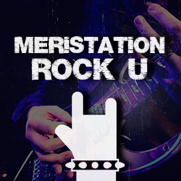
MeriStation - Rock U (Nacho Ortiz set)
Enter Sandman
Metallica
0:00
0:00
Artistas incluídos:
Radios relacionadas:
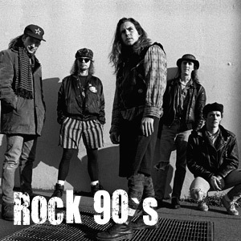
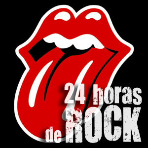
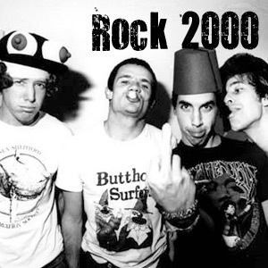
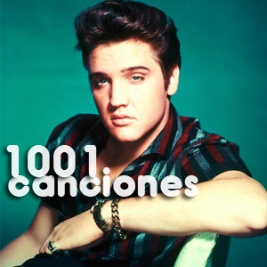
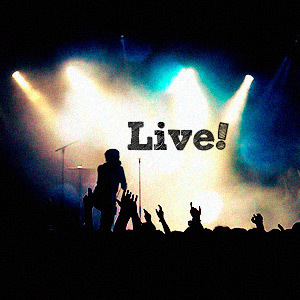
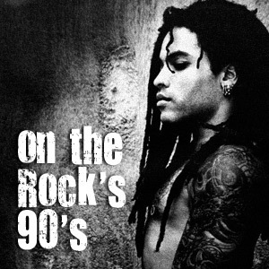
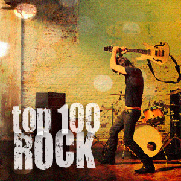
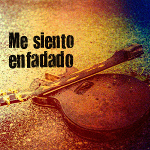
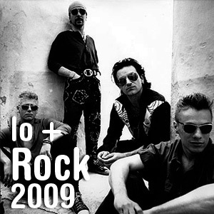
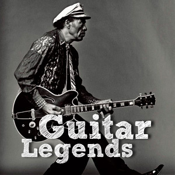